VFX Art
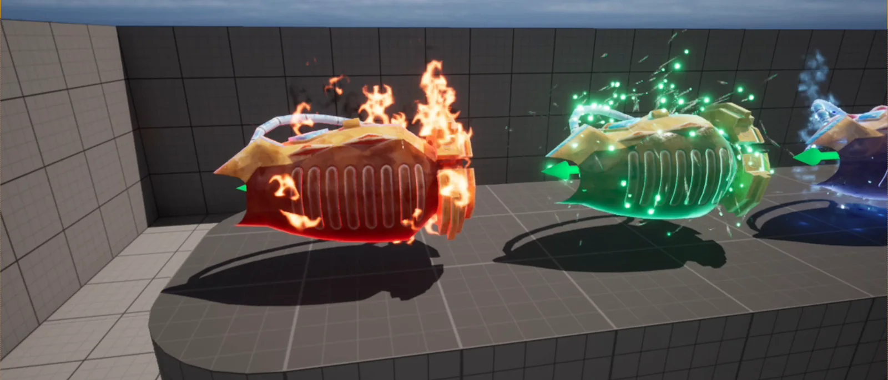
Light Reforged VFX
Effects I made in Niagara for Light Reforged, captured in a test level. Cannon Switch gives three cannon variants their own look: flames, green energy, and a frosted blue glow. The portal is a blue disc with a swirling core and a ring of particles, and the wisp is a glowing light that trails sparks and drifting motes. I also made the lightning strike and rain of arrows area effects, Loki's protection orb, orb explosions, steam bursts, and the effects for Ivaldi, Sif, and Idunn's apple.
My Process
Each effect started as a quick reference pass, flame, energy, frost, before I built it out in Niagara with layered emitters for the base shape, sparks, and glow. I kept the cannon variants on a shared system with swappable modules so all three could reuse the same core setup, then tuned color, motion, and timing in a test level until each read clearly at a distance.
Cannon Switch
Portal
Wisps
Effect Frames
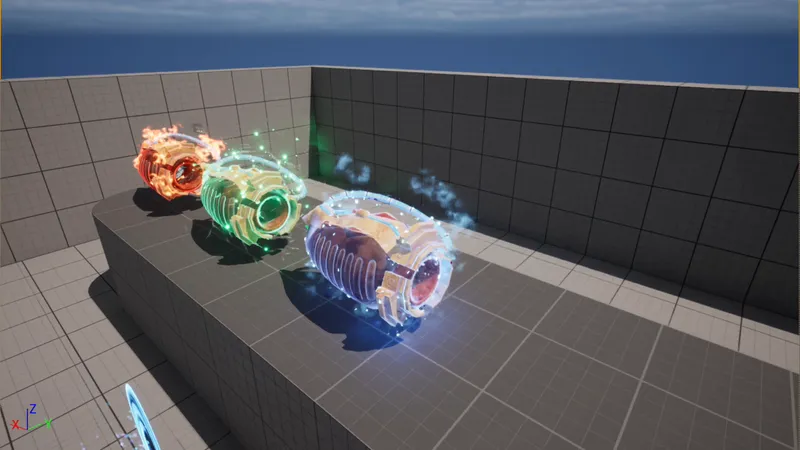
Cannon Switch
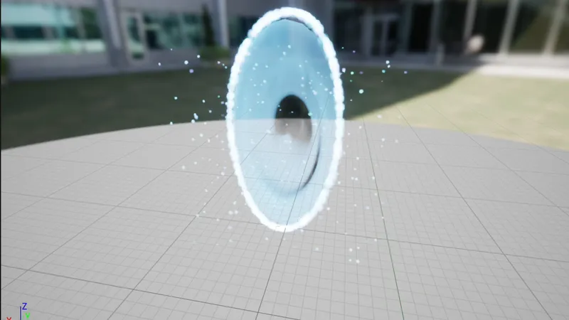
Portal
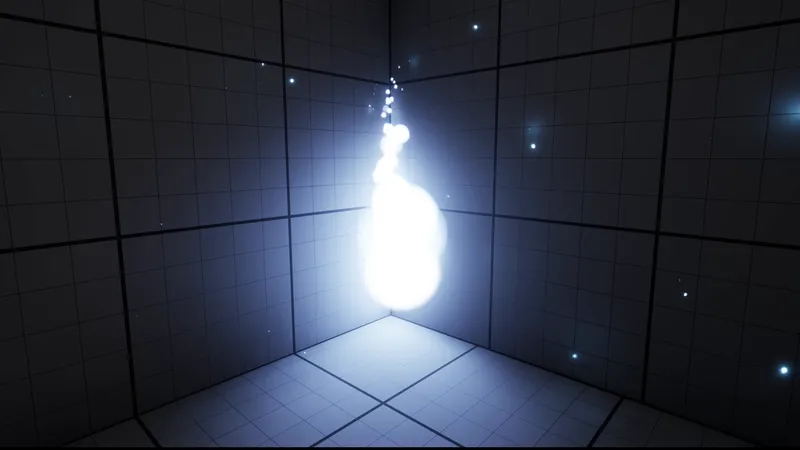
Wisp
Credits: The effects are mine. The cannon models were made by Jaime Rivera.
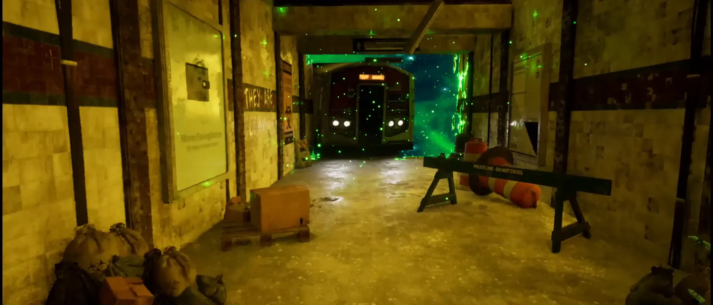
VFX Showcase Reel
A reel of real-time effects I built in Unreal Engine 5 with Niagara, set in an abandoned subway station. It covers GPU sprite emitters for sparks, mesh emitters, lit magic particles, and a ribbon emitter meteor shower. It ends with a green portal that opens at the end of the tunnel, with a subway train and a nebula on the other side.
My Process
This reel was built to show range: I worked through GPU sprite emitters for the sparks, mesh emitters for solid debris, lit particles for the magic effects, and a ribbon emitter for the meteor shower, each as its own Niagara system. The closing portal combined a shader-driven disc with layered particle rings, tuned in the subway set until the transition felt seamless.
Showcase Reel
Effect Frames
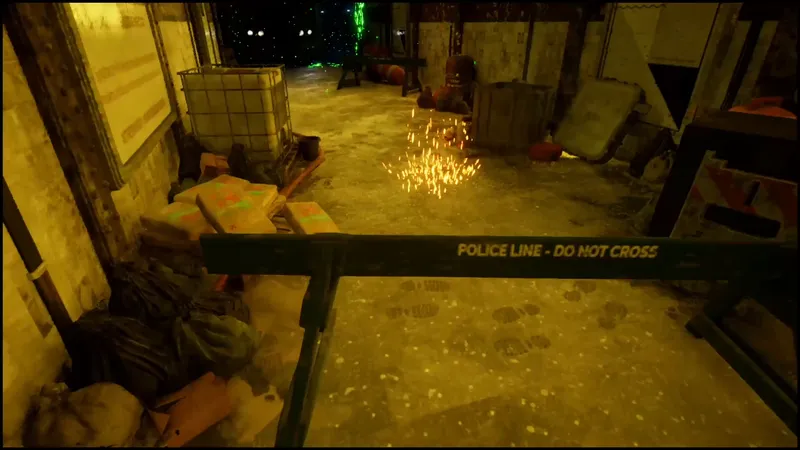
Sparks
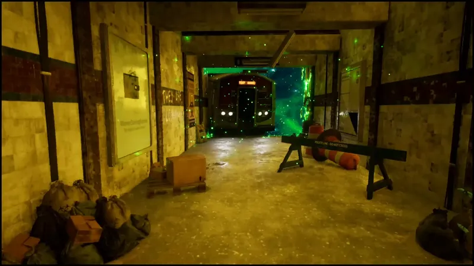
Portal and Train
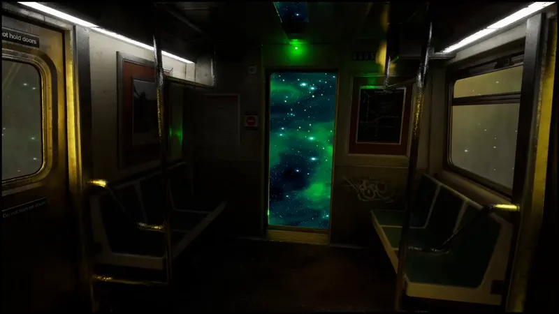
Nebula Beyond the Door
Credits: The subway environment, train, and other 3D assets are third-party. The nebula backgrounds are by Screaming Brain Studios (CC0). The effects are mine.
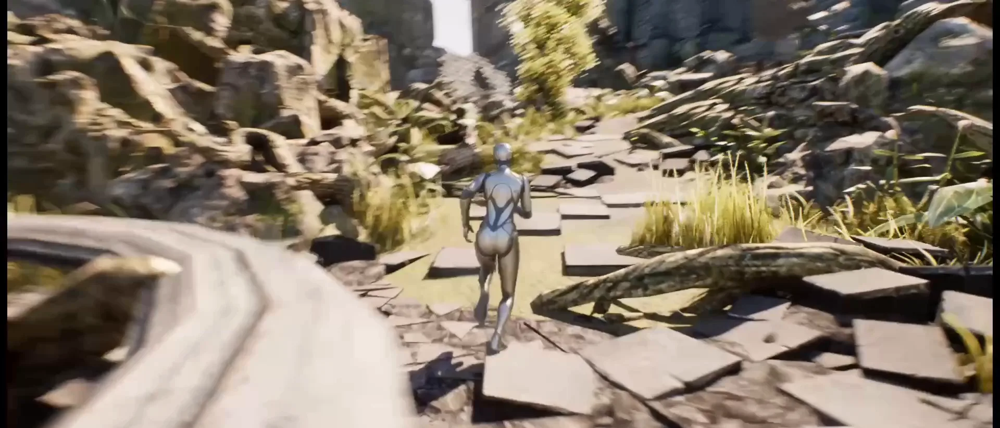
Chaos Cloth Simulation
Cloth simulations built with Unreal Engine 5 Chaos: five waving flags and cloth on an articulated character, shown in a ruined stone courtyard.
My Process
I set up Chaos cloth on the flags and the character's garment separately, tuning mass, stiffness, and wind response for each so the flags read as light fabric while the character cloth held its shape during movement. I ran the sims in the courtyard set and adjusted collision and damping until the motion looked natural rather than floaty or stiff.
Simulation Reel
Effect Frames
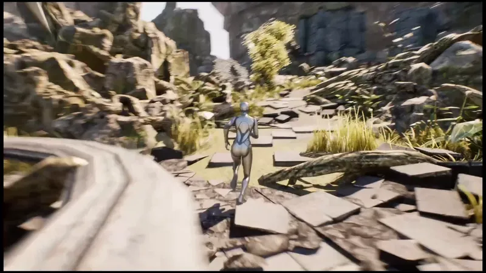
Running Through the Ruins
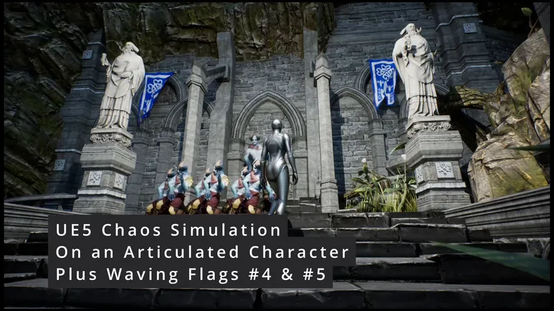
Articulated Character and Flags
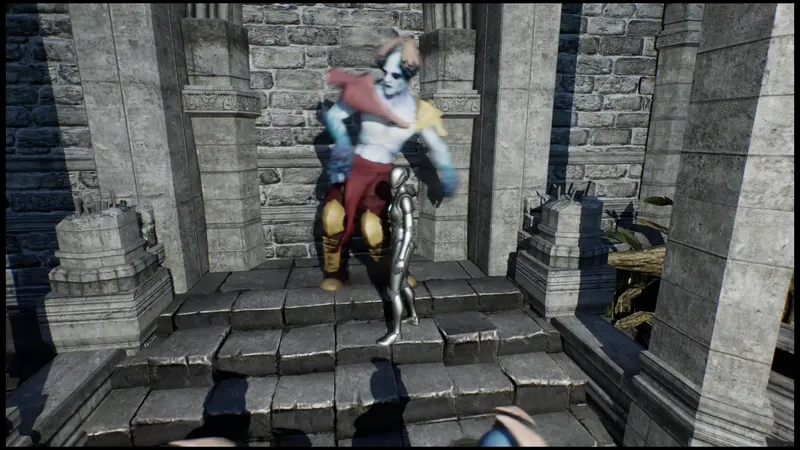
Cloth on a Character
Credits: The environment and characters are third-party assets. The simulations are mine.
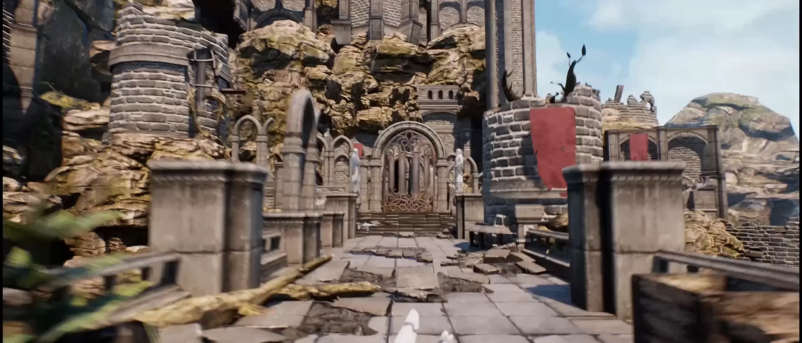
Chaos Destruction
Destructible objects built with Unreal Engine 5 Chaos, shown in a first-person walk through a ruined fortress. The reel covers two destructible objects and a set of extra destructible objects.
My Process
I set up each object's fracture pattern in Chaos, tuning cluster sizes and stress thresholds so the pieces broke apart convincingly under impact rather than exploding uniformly. I tested the destructibles in the fortress set from a first-person perspective to make sure the debris felt physically grounded as the camera moved through it.
Destruction Reel
Effect Frames
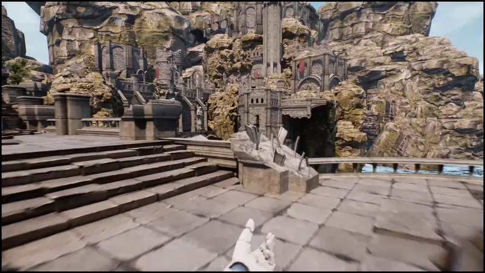
Fortress Approach
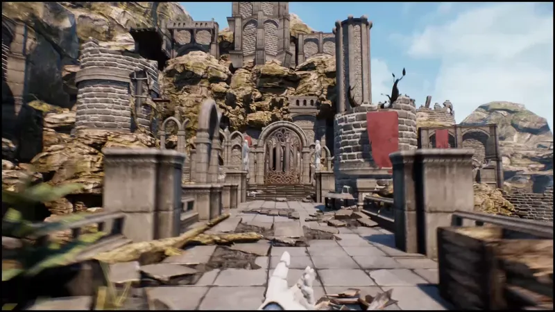
Courtyard
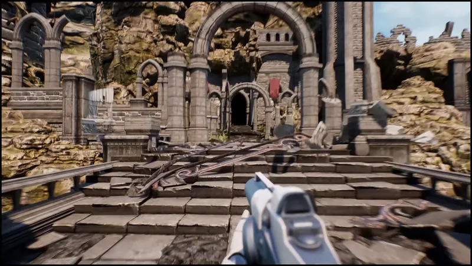
Debris
Credits: The environment and the weapon are third-party assets. The destructible objects and their simulations are mine.
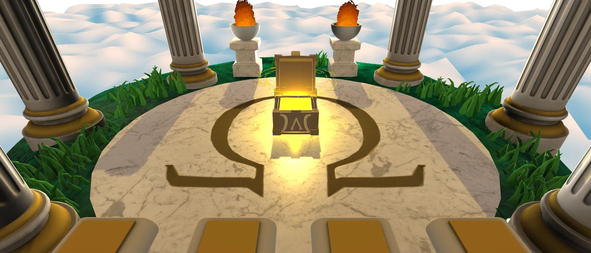
Lobby
VFX for the game's lobby: the flames rising from the braziers and the wisps of light that curl around Pandora's box.
My Process
I built the brazier flames and the box's wisps as separate VFX Graph systems, layering flame cores with sparks and heat distortion, and giving the wisps a curling path so they'd drift convincingly around the box. I tuned both in the lobby scene until they held up next to the other lit elements without overpowering the space.
Fire and Wisps
Effect Frames
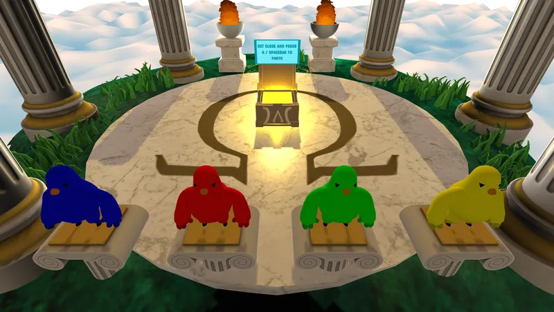
Lobby Overview
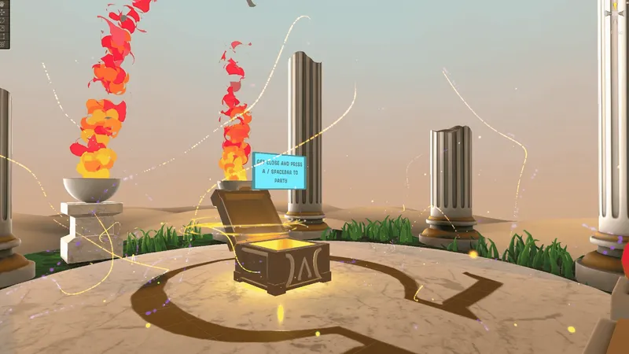
Wisp Trails
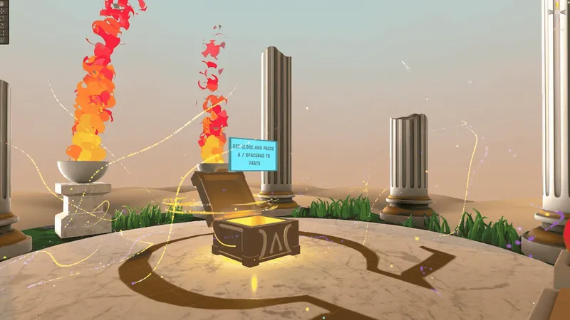
Rising Flames
Credits: The golden glow on the chest in the center of the lobby was not made by me.
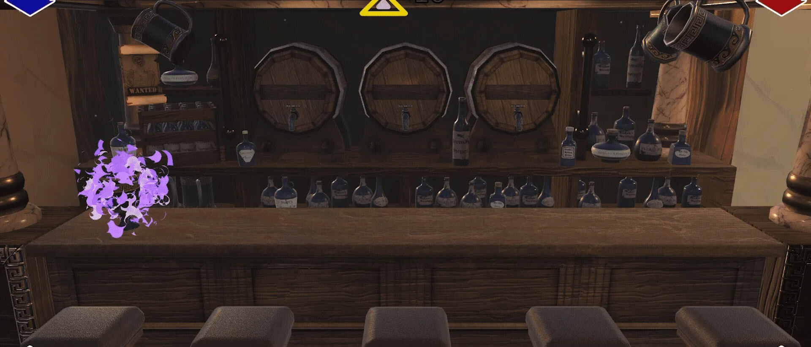
Shot Guesser
VFX for the Shot Guesser minigame, set in a tavern. The main effect is a purple magic poof, with sparkle bursts and a spotlight on each goblet during a player's turn.
My Process
I built the poof as a quick burst-and-fade particle system in VFX Graph, then layered in the sparkle bursts and a simple spotlight effect on the goblets using Shader Graph. Since these effects fire during a player's turn, I kept the timing short and readable so they wouldn't slow down the pace of the minigame.
Poof VFX
Gameplay Preview
Effect Frames
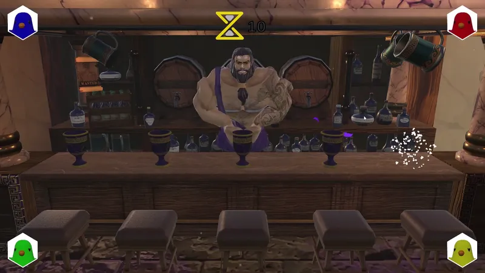
Sparkle Burst
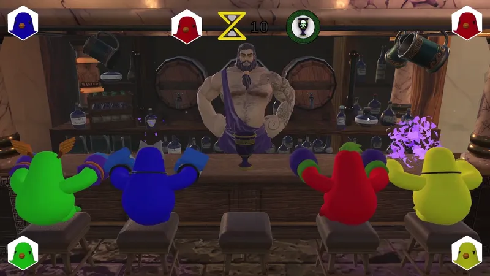
Purple Magic Puff
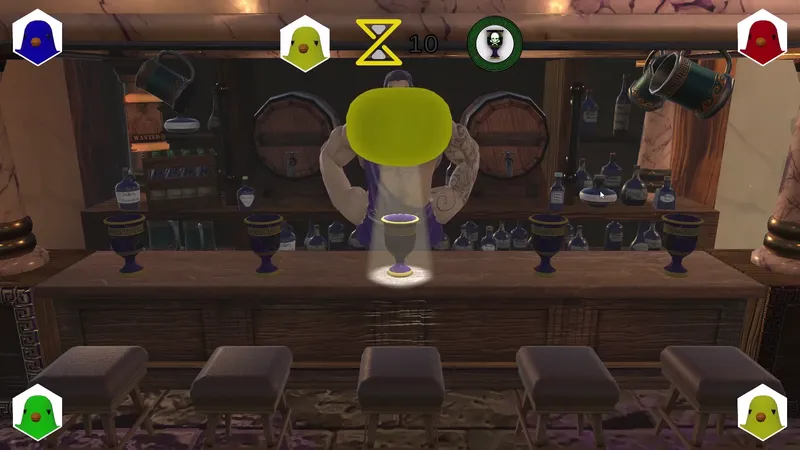
Goblet Spotlight
Credits: Dionysus character art by Katelynn Reyes. Animations by Benjamin Navarro.
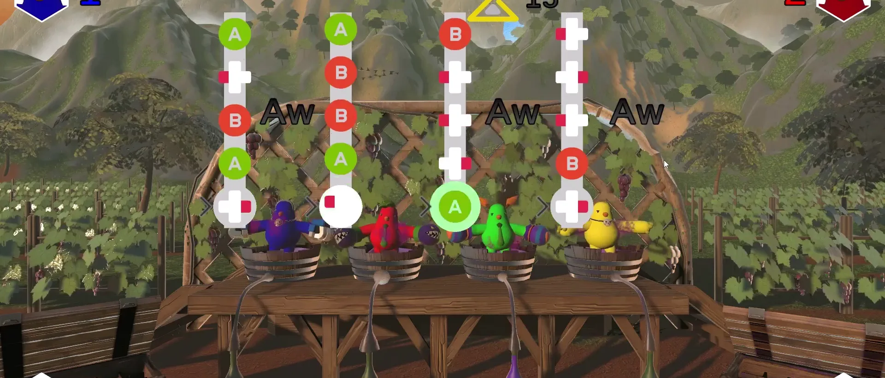
Grape Stomp
VFX and shaders for the Grape Stomp minigame, set in a vineyard. Effects include the wine streaming from the barrels into the bottles and the splashes that pool on the ground, plus atmosphere for the wider scene: rolling fog in the background, birds flying overhead, wind trails moving through the vines, a distant waterfall, and a wind shader on the foliage.
My Process
I built the wine stream as a looping particle system timed to the barrel animation, then layered in splash and puddle effects using VFX Graph and a shader for the pooling liquid. For the surrounding atmosphere, I used VFX Graph for the rolling fog, the birds, and the wind trails through the vines, and Shader Graph for the foliage's wind sway and the waterfall's surface. Getting the stream-to-splash timing to line up with the animation took the most iteration.
Gameplay Preview
Effect Frames
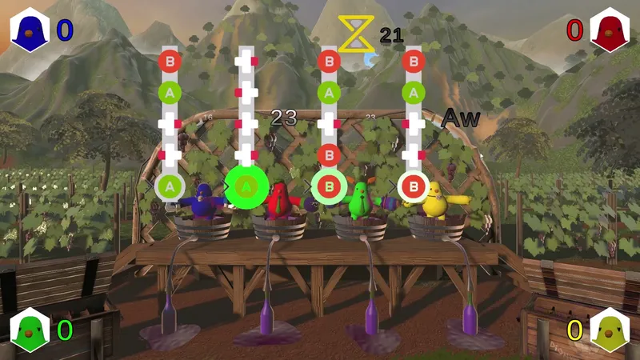
Wine Streams

Splash and Puddles

Full Scene
Credits: Level layout and most of the environmental props by Veronica Mauro. Animations by Benjamin Navarro.
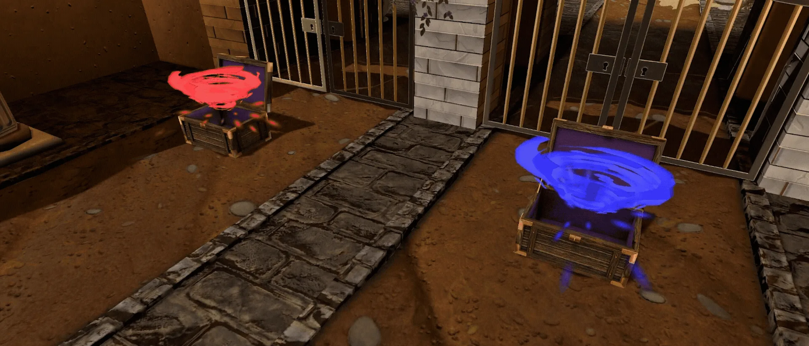
Leopard Tug
VFX for the Leopard Tug minigame, set in a columned stone hall. The main effect is a collection vortex over each player's crate, in that player's color, and trails follow the players as they run.
My Process
The collection vortex is a looping particle system recolored per player through material parameters, and the trails use a ribbon-style effect that follows each player's movement. I tuned both in the hall set so the colors stayed readable at a distance while players were running.
Collection Vortex
Gameplay Preview
Effect Frames
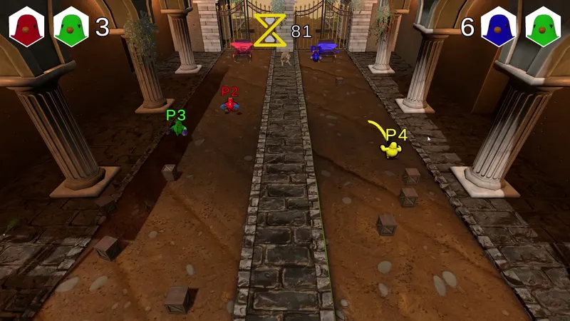
Player Trails
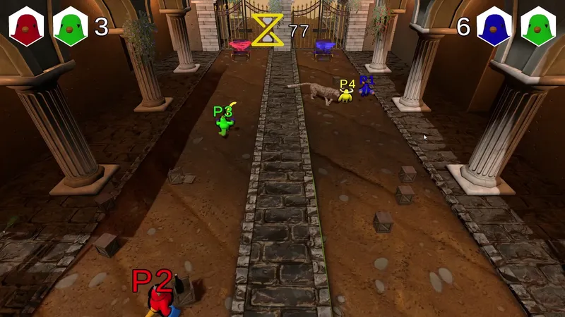
Trails in Motion
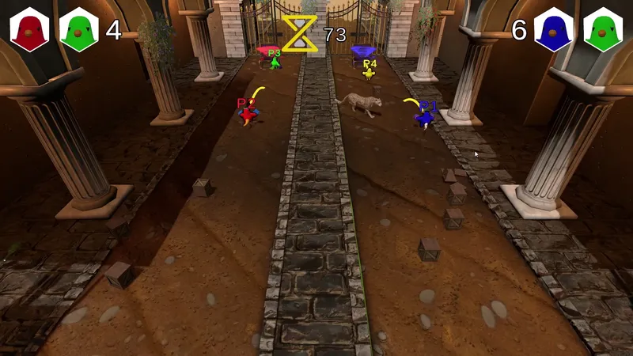
Hall Overview
Credits: Leopard character art by Katelynn Reyes. Animations by Benjamin Navarro.
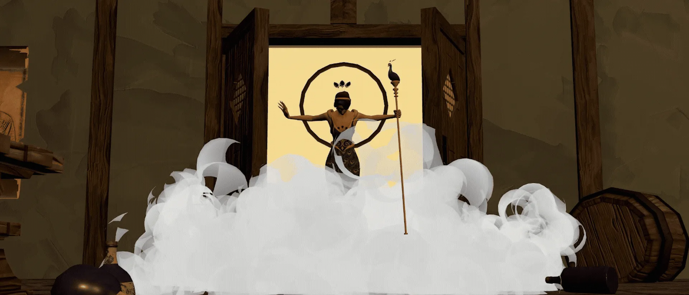
Hera Chase
VFX for the Hera Chase minigame and its introduction cutscene. In the intro, fog rolls across the floor as Hera appears in the doorway. In the minigame, purple energy swirls appear across the room, along with effects for Hera's staff attack and projectiles.
My Process
The intro fog uses a volumetric-style particle system timed to Hera's entrance, while the energy swirls and projectile effects for the chase itself are separate VFX Graph systems built for quick readability during fast gameplay. I spent extra time tuning the fog's density and backlighting so the doorway reveal landed with the right amount of drama.
Intro Fog
Gameplay Preview
Effect Frames
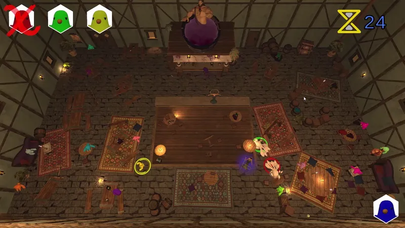
Energy Swirl
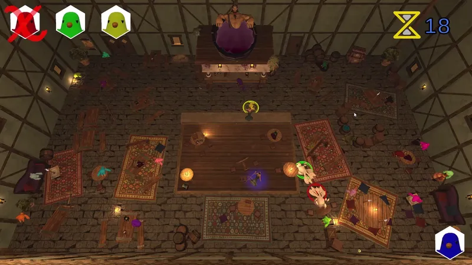
Swirl in Play
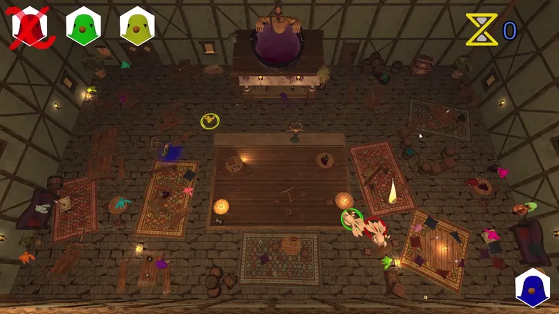
Projectile Effect
Credits: Hera character art by Katelynn Reyes. Animations by Benjamin Navarro. Other environmental props by Veronica Mauro.